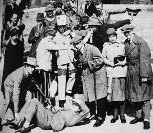
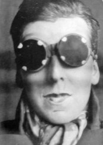
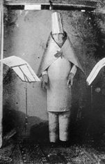
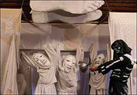
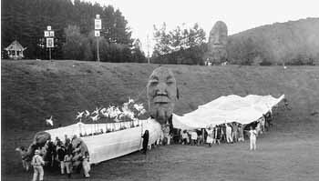

|
|

هنر انعکاس نیست ، پتک است*
تارا نجداحمدي
يكشنبه25 فروردین 1387
در جامعه ای که هنر پدیده ای مقدس و هدیه ای الهی تصور می شود پایین آوردن آن از عرش و زمینی کردن آن وپرداختن به آن چه که موجود است و دغدغه واقعی ما در زندگیست کار اسانی نیست.
توانایی هدایت این اعتراض و مخالفت با وضع موجود به شکلی از آفرینش هنری که خلاق و موثر بوده و صرفا مسیری برای گله گذاری یا ابراز افسردگی نباشد اصلی ترین محوریست که در این نوشته به آن می پردازم.
بخش زیادی از تاریخ هنر، ادبیات و موسیقی ما تاریخ سلحشورانه و محافظه کاریست که به تمجید ازخود می پردازد و کم تر به کنش اجتماعی ورویکرد جمعی به عنوان یک برون رفت واقعی نگاه می کند. تئاتر خیابانی به عنوان یکی از آزاد ترین نمونه های دیالوگ هنر و مردم یکی از راه های شکستن این فضای بسته و به ظاهر نخبه گرای هنرمندانه و ارتباط با سطح گسترده تری از جامعه است. شکلی از ارائه هنری که در مقایسه با گالری ها و نمایشگاه ها-که در آن مخاطب آگاه با انتخاب خود به دیدن اثر می رود- با طیف وسیع تر و متنوع تری از جامعه ارتباط برقرار کرده و خود را به مردم خیابان تحمیل می کند.
هر چند خیابان ها و حضور معترض در آن در دولت های غیر مردم گرا به شدت سیاسی وکنترل شده و محدوداست اما در شکل عام خیابان به عنوان تنها مکان هندسی بروز حرکت جمعی برای اقشاری که از لحاظ ساختاری فاقد هرگونه جایگاه نهادی برای بیان اعتراضشان هستند مکان مناسبی برای ابراز وجود است.
حضور گروه های معترض در خیابان با استفاده از تئاتر برای بیان مستقیم وبی واسطه و دور از سانسور برای ما که از تجربه حضور آزادانه در مکان های عمومی محروم بوده ایم اندکی گنگ است، اما اجرای چند تئاتر خیابانی مستقل که در دو ماه گدشته با برد خبری محدود در تهران انجام شد ثابت کرد امکان حضور گروه های مستقل هنری برای بیان خواسته ها و انتقاداتشان همچنان ممکن است.
هر چند از آنجایی که جریان های هنری غالب بخشی از صنعت مبتذل فرهنگ سازی و در جهت توجیه و حفظ وضع موجود است، هر شکل مخالفت هنری با وضع موجود سیاسی تلقی خواهد شد. در نهایت جریان های معترض باید در پی ایجاد و تبلیغ هنر خودجوش، کم خرج و خلاقانه باشند، هنری "از جنس خود جنبش" که روایت های تازه و کوچکی از آن چه که دیده نمی شود یا عموما "مهم" دانسته نمی شود را ارائه دهند. طرفداران هپنینگ ارزش های هنری رایج و بورژوایی را که در نهایت منجر به تثبیت منافع نظام موجود و مستقر است رد می کنند. به نظر آن ها اثر هنری چندان قابل استفاده و پایدار نیست ، بلکه از آن باید "رویداد" ساخت.
دادائیست ها (1915-1922) برای اولین بار اعتراض و مخالفت خود را با جریان های موجود هنری در قالب حضور در مکان های عمومی و انجام اعمال مخالف عرف و ارائه آثاری که بعد ها در تارخ هنر به آن ها ضد هنر(anti art) گفته شد آغاز کردند. آن ها همواره در برابر مردم حاضر می شدند و با وجود مخالفت های سالن ها و نمایشگاه ها با سماجت زیاد حضور متقاوت خود را به مکان های عمومی تحمیل می کردند. در گروه های کوچک و بدون دکور و صحنه وحتی متن مشخص شروع به حرف زدن می کردند. نطق هایی که در مخالفت آشکار با نظام رایج بورژوایی هنر بود و هر زمان نیز که امکان اجرا یاارائه کار را نداشتند از " بدن خودشان " به عنوان مجموعه ای از لباس ها و رفتارهایی که با عرف مستقر ومقبول اجتماعی در تضاد بود استفاده می کردند. آن ها در بین تئاتر هایشان بریده های روزنامه و نطق های جدی سیاستمداران را دوباره می خواندند، بی هیچ تغییری ، اما مردم از خنده روده بر می شدند و حتی گاهی با آن ها درگیر می شدند ودرگیری ها منجر به زد و خورد و دستگیری توسط پلیس می شد. دادائیست ها با رویکرد خلاق، زنده و حتی مخربشان به نفی و هجوجزئیات نظام مستقر می پرداختند. با جسارت تمام به خود و دیگران می خندیدند و با اجرا های غیر مالوف و شوخی های مداومشان تهدیدی جدی برای ارزش های زیبایی شناسی و هنر والای ویژه موزه ها و تئاتر های ثروتمند و بورژوایی دوران خود شدند. تئاترها، نمایشنامه ها و اشعارشان لبریز از اتفاقات عجیب و تکان دهنده است به طوری که برای اولین بار دست به مخالفت جدی با "زیبا بودن هنر" را به عنوان شرط اصلی ارزش گذاری یا مفید دانستن اثر هنری زدندو این مخالفت را نیز با تحمیل حضور معترض و متمایز خود به همه نشان دادند.

یکی دیگر از گروه های تئاتر معترض که در سال های 60 در آمریکا فعالیت می کرد گروه تئاتر نان و عروسک بود. تئاتر نان و عروسک به الگویی برای گروه های نمایشی بی شمار و جوانی بدل شد که سعی در خروج از نهاد های جا افتاده و رسمی هنری داشتند تا به طور مستقیم به زندگی واقعی و اتفاقات موجود بپردازند. این تئاتر به ویژه با جنبشی که با نژاد پرستی و جنگ مقابله می کرد در ارتباط بود. آن ها به نظامی که کلیه شکل های هنری را در نهاد های مشخص و ثابت خود(کافه تئاتر ها و کلیسا ها ) جذب می کردند پشت کردند. درواقع شکلی از خروج از ساختار همیشگی نمایش و خلق" تئاتر حاشیه". هیچ یک از گروه های هنری رادیکال کمک مالی از بنیاد ها دریافت نمی کردند. آن ها از دکور و لباس و طراحی صحنه پر خرج و نور استفاده نمی کردند، بازیگرانشان آزادانه نقش های خود را بازی می کردند. متن مشخصی که خود را به آن محدود سازند در کار نبود. متن معمولا در جریان کار و در کوتاه ترین شکل ممکن ساخته می شد.

در این تئاتر گروه شیوه های مختلفی برای اجرا داشت، یک شیوه آن اجرایی کاملا فی البداهه و برنامه ریزی نشده در خیابان بود، در برخی موارد نیز گروه به مناسبت اتفاق های مختلف در خیابان حاضر می شد و دست به اعتراضات کوچک و نمادینی می زد که شاید تاثیر بزرگ و رسانه ای خاصی نداشت، اما در همان مقیاس کوچک نیز با بازی گرفتن نظم و فشار مستقر، خدشه پذیری و حتی مضحک بودن جزئیات و اهرم های قدرت را نشان می داد.
برای مثال تظاهر کنندگان کیسه های پلاستیکی کوچکی پر از خون را با خود حمل می کردندو در زمان مناسب هنگامی که پلیس باتوم خود را بلند می کرد آن را روی سرخود می ریختند. در واقع تئاتر حاشیه با نفی ساختار رایج و تئاتر گونه خود می کوشید با واقعیت بیامیزد. نمایش الزاما نشان دادن یک واقعه نیست ، بلکه عمل است ، خلق یک رویداد است در اینجا خون ریخته شده روی سر عابرین ماهیت سرکوب گر نظام مستقر را به مستقیم ترین شکل ممکن همراه با کنایه به عابرین نشان می داد و تفاوت لحظه و اراده ای که بین باتوم فرود نیامده تهدیدگر و باتوم فرود آمده است در عمل به هیچ تبدیل می شد. یا مثلا تئاتر چریکی بدون بازیگر مارک استرین که در آن به تغییر صندوق های پست آمریکا به پرچم جبهه ملی آزادی ویتنام، یا نوشتن شعار روی صورت غذای رستوران ها، رنگ آمیزی اتومبیل ها و ... دست می زدند.

در 1970 بخشی از تئاتر نان و عروسک جدا شد و تئاتر خیابانی درد دل ایجاد شد. این گروه 12 نفره در خیابان ها حرکت می کرد و به سادگی با رهگذران درد دل می کردند. آنان با هدف خلق نمایش هایی که برای دفاع از حقوق زنان باشد در خیابان اجرا داشتند و همچون گروه نان و عروسک ، عروسک هایشان را خودشان می ساختند اعلان هایی تهیه و روزنامه هایی مصور می ساختند و آن ها را در سطح شهر پخش می کردند.
شیوه این اعتراض ها بر خلاف دادائیست ها بحث و مجادله و جنجال نبود، وقتی اعضای شورای محلی برای بحث درباره نمایش به آن جا می رفتند گروه مکان را ترک می کرد چون وظیفه خود را بحث کردن نمی دانستند. بلکه تلاششان در جهت " شروع بحث" در فضایی بود که بحث و نقد در آن فراموش شده بود.راهپیمایی اعتراضیشان پر از رنگ بود و از طنز و هجو برای دست انداختن نظام و سیاستمداران جدی و خشکی که به آن ها نقد داشتند استفاده می کردند. می خواستند به هنر کارکردی اجتماعی ببخشند که آن را از توهمی زیبا به شاهدی جانبداربرای زندگی واقعی تبدیل کنند. کارعملی واقعی وخواست اثر در تاثیر آن روی مخاطب و نهایتا در ابتکارهای افراد برای بیان اعتراض در رویکردهای اجتماعیشان بود، و نه صرفا ارائه یک اجرای خوب روی صحنه.

ویژگی دیگر این هنر نیز در شکل ارائه آن است، شکل ارائه این آثار نیز بخش بزرگی از هویت و اثر گذاری و ماهیت اعترضی آن است. در حقیقت ازآنجایی که همه این تئاتر های معترض از لحاظ اقتصادی فقیرند، فقر برای آن ها به روشی ویژه جهت مقابله با وضعیت کنونی تبدیل می شود. آن ها از محل های ارزان مثل گاراژ یا سالن های ارزان عمومی ، یا خانه های خالی و نیمه خرابه و در صورت امکان خیابان استفاده می کنند. این شیوه اجرای تئاتر سبب جروبحث می شد، دگرگونی بینندگان از تماشاچی به بازیگر را نقش اساسی تئاتر خیابانی و عنصری در کل نوعی انقلاب فرهنگی بود .این شیوه اجرای تئاتر از آنجایی که با فقدان تفاهم و گاه خصومت از سوی تماشاچیان روبرومی شد عمر کوتاهی داشت، شاید این خود نشان از قدرت اثرگذاری بالای آن در مقیاسی هر چند کوچک باشد، چون هدف این شیوه از اجرا نیز ایجاد همان جرقه اندیشه ای است که در مخالفت و برآشفتن اولیه مخاطب با آن عینی می شود. مخاطبی که به باورهای بدیهیش در غالب طنز و بازی حمله شده است. بازی در ذات خود هیچ فایده مشخصی ندارد. هیچ منفعت خاصی را دنبال نمی کند. این شیوه بی فایده بودن در بازی بسیار قابل تقدیر است چرا که در بازی به شیوه ای انقلابی با تفکر اقتصادی به حداکثر رساندن سود مخالفت می کنیم. و بازی کردن علیه قدرت پول، علیه عقلانیت مفید و در نهایت بازی و شوخی با قدرت سیاسی و نظم مستقر است.

نافرمانبرداری موجود در بازی و ابراز آن در برابر دید عموم ، هر چند برای لحظاتی کوتاه خود نشان دهنده شکستن نگاه مردسالارانه و ارزش گذار است. بازی نیاز به دانش ندارد و در نهایت نیز از تجربه زیسته شده افراد بیرون می آید که با ابراز آن در برابر دید عموم - حتی به شکلی کاملا غیر زیبا شناسانه - اثر هنری آزار دهنده اما تاثیر گذاری ایجاد خواهد شد.
*فردریش گرنشتاین
منابع:
1. تئاتر نان و عروسک ، فرانسواز کوریلسکی،نشر قطره ، 1383
2. Dada art and anti art ,Hans Richter ,Thames & Hadson , 2001
3. Dada and surrealism , Mattew Gale , PHAIDON , 2002
4. مبارزه علیه وضع موجود، سابینه فون دیرکه، طرح نو، 1381
5. سیاست های خیابانی، آصف بیات، شیرازه، 1379